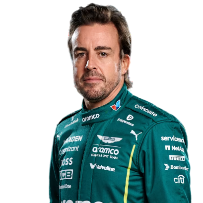
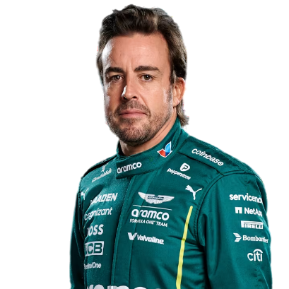
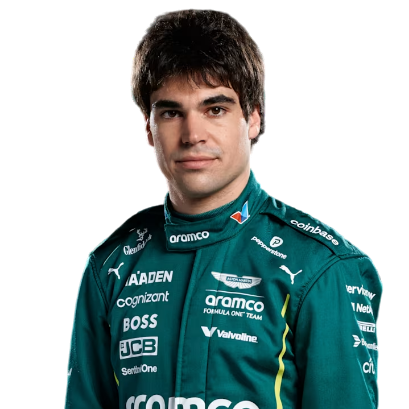
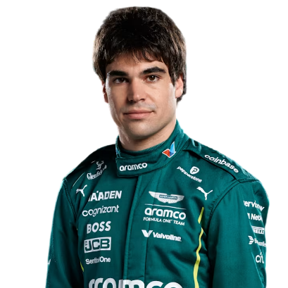

Aston Martin Aramco F1
Aston Martin es un nombre con una rica herencia en el automovilismo, pero su trayectoria como equipo de Fórmula 1 ha sido un viaje de idas y venidas, con un regreso muy ambicioso en la era moderna.
Los Primeros Pasos y la Retirada (1959-1960)
La primera incursión de Aston Martin en la Fórmula 1 fue a finales de la década de 1950. Después de éxitos notables en carreras de resistencia, como la victoria en las 24 Horas de Le Mans en 1959, la marca decidió probar suerte en la máxima categoría.
Debut: Aston Martin hizo su debut en el Gran Premio de Países Bajos de 1959 con su monoplaza DBR4.
Resultados: A pesar de la experiencia en otros campeonatos, el equipo no logró puntuar en ninguna de las carreras en las que participó en 1959 y 1960. Sus coches, aunque elegantes, no estaban a la par con la tecnología de sus rivales en la F1.
Retirada: Debido a los malos resultados y el enfoque en otros proyectos, Aston Martin decidió retirarse de la Fórmula 1 como equipo oficial al final de la temporada de 1960.
Un Largo Receso y la Era Moderna (2021 - Actualidad)
Aston Martin estuvo ausente del gran circo de la F1 durante más de 60 años, aunque su nombre y su legado se mantuvieron vivos en el automovilismo deportivo.
El regreso a la Fórmula 1 como equipo de fábrica se materializó en 2021 gracias a la visión y la inversión del empresario canadiense Lawrence Stroll. La historia del equipo moderno de Aston Martin se remonta a la adquisición por parte de Stroll del equipo Force India en 2018 (que luego compitió como Racing Point). En 2020, Stroll invirtió significativamente en la compañía automotriz Aston Martin Lagonda, y como parte de este movimiento, el equipo de F1 de Racing Point fue renombrado como Aston Martin F1 Team a partir de la temporada 2021.
Regreso oficial (2021): Aston Martin hizo su reaparición en la F1 con el piloto alemán Sebastian Vettel (cuatro veces campeón del mundo) y el hijo de Lawrence, Lance Stroll, al volante. El equipo utiliza motores Mercedes-AMG. En su primera temporada de regreso, lograron un podio con Sebastian Vettel en el Gran Premio de Azerbaiyán, mostrando destellos de su potencial.
Años de desarrollo: Las temporadas 2021 y 2022 fueron de consolidación y construcción para el equipo. Se realizaron importantes inversiones en infraestructura, incluyendo la construcción de una nueva y moderna fábrica en Silverstone, así como la incorporación de personal clave.
La revelación de 2023: El equipo se convirtió en la gran sorpresa del inicio de la temporada 2023 con la llegada de Fernando Alonso. El monoplaza AMR23 demostró ser extremadamente competitivo, especialmente en la primera mitad del año. Fernando Alonso logró múltiples podios, devolviendo a Aston Martin a la lucha regular por las primeras posiciones. El equipo terminó en una destacada quinta posición en el Campeonato de Constructores.
Ambición a largo plazo: Lawrence Stroll ha dejado claro su objetivo de convertir a Aston Martin en un equipo ganador del campeonato mundial. La contratación de figuras prominentes como el legendario ingeniero Adrian Newey (anunciada para unirse en 2025) y la asociación con Honda como proveedor de motores a partir de 2026, subrayan la ambición de la escudería de Silverstone de competir por el título en el futuro cercano.
- País: Reino Unido
- Base: Silverstone, Reino Unido
- Debut: 1959
 

 
